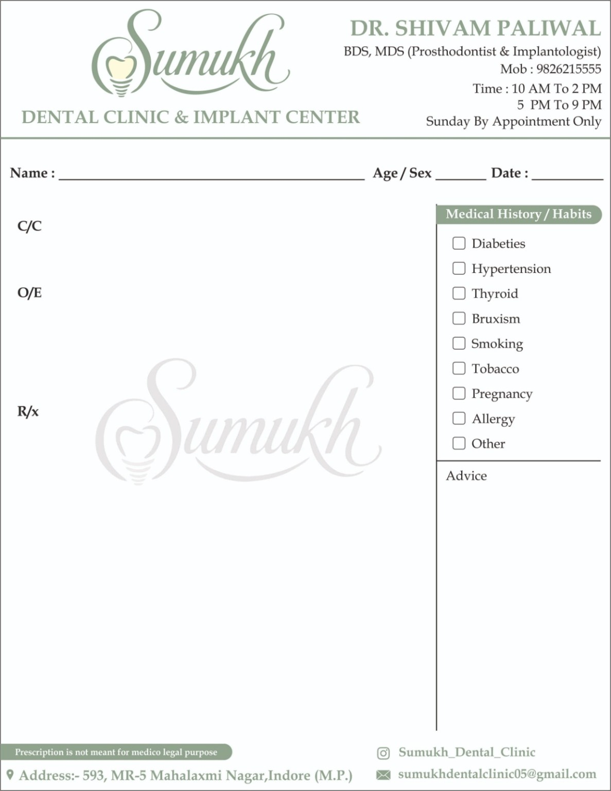
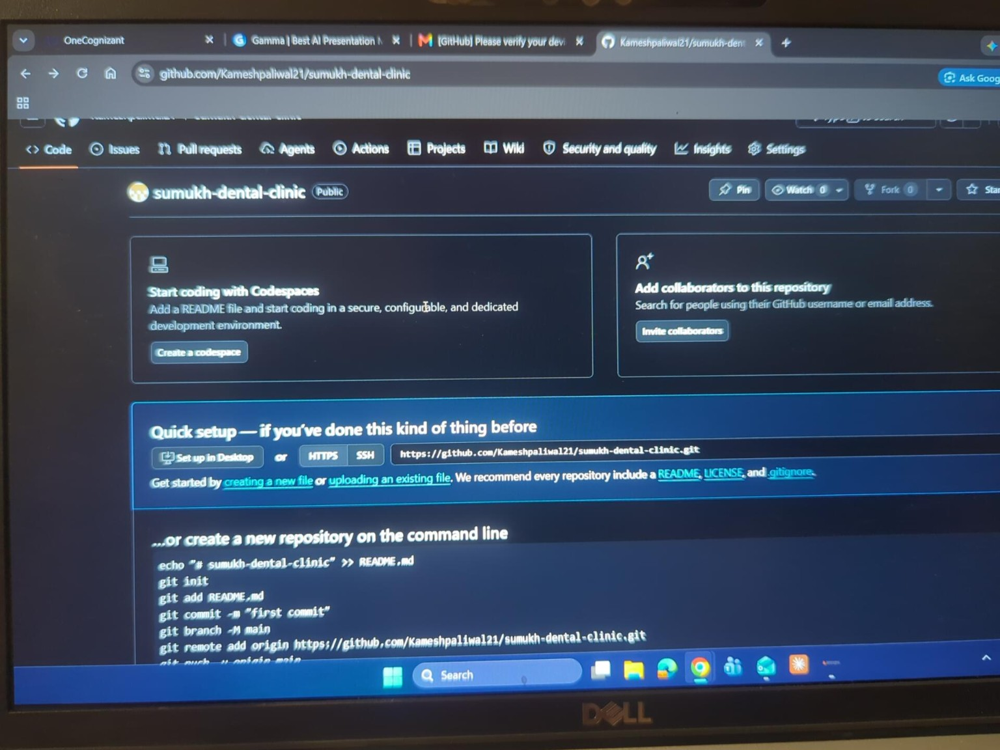
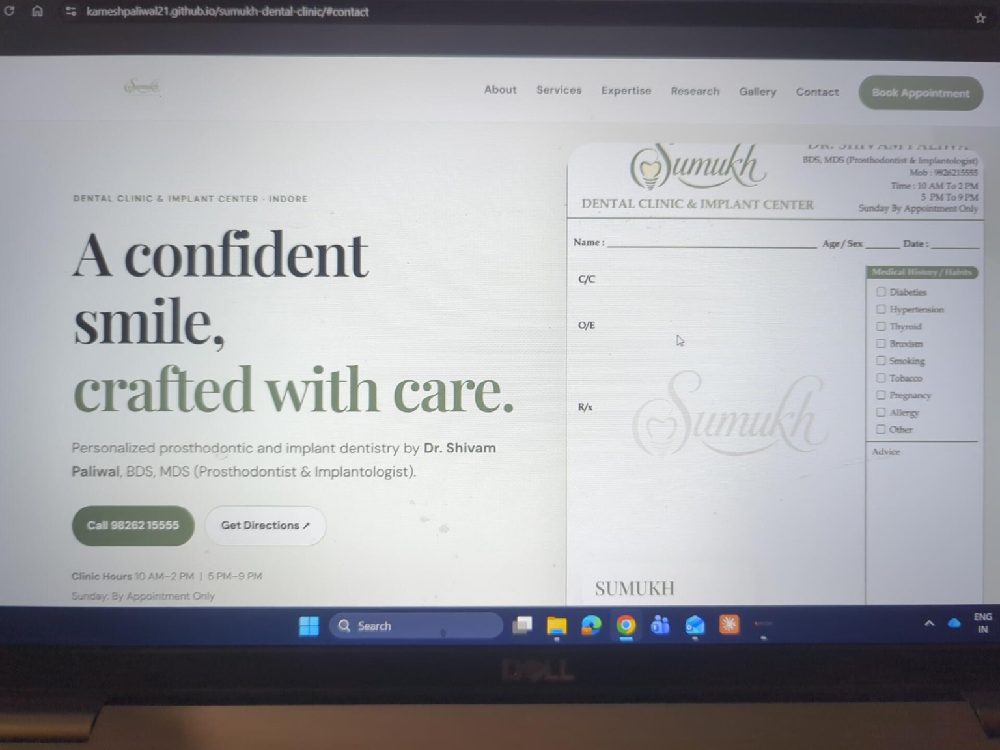

Dental Check-ups & Consultation
Routine oral examinations and guidance to understand your dental health and treatment needs.
Personalized dental care focused on comfort, precision and long-term oral health. Your smile deserves thoughtful attention at every step.

At Sumukh Dental Clinic & Implant Center, we believe dental care should feel clear, comfortable and personal. We take time to understand your concerns and discuss suitable treatment options with you.
From routine check-ups to restorative and implant dentistry, our aim is to help you make informed decisions about your oral health.
Plan your visit ↗Explore our dental services. Your dentist will explain the options suitable for your individual needs after an examination.
Routine oral examinations and guidance to understand your dental health and treatment needs.
Digital imaging and scanning support detailed assessment and treatment planning.
Professional cleaning and gum-health care to help manage plaque, tartar and inflammation.
Tooth-shaded restorative fillings for repairing cavities and minor tooth damage.
Treatment to address infection or inflammation inside a tooth and help preserve it.
Fixed restorations designed to protect damaged teeth or replace missing teeth.
Tooth-colored crown options selected for strength, fit and natural-looking appearance.
Implant-based options to replace missing teeth and support fixed restorations.
Removable tooth-replacement options planned to support comfort, speech and chewing.
Metal-framework removable dentures designed to provide a supportive and durable fit.
Cosmetic treatment planning to enhance smile appearance and tooth shade where suitable.
Orthodontic options to gradually improve tooth alignment and bite relationships.
Dental check-ups, preventive guidance and treatment focused on children's oral health.
Assessment and removal of teeth when extraction is considered clinically necessary.
Comprehensive restorative planning for patients with multiple or complex dental concerns.
Assessment and care for urgent dental pain, injury, swelling or other acute concerns.
BDS, MDS · Prosthodontist & Implantologist
With a focus on prosthodontics and implant dentistry, Dr. Shivam Paliwal works toward restoring oral function, comfort and aesthetics through individualized treatment planning.
Schedule a ConsultationA calm, welcoming setting for your dental visits.


Speak with our clinic to schedule a consultation or ask about our services.
Contact us for appointments, directions and treatment enquiries.